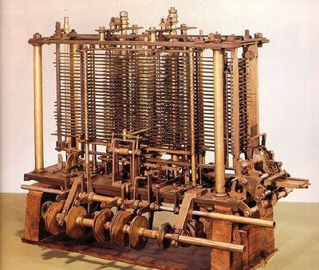
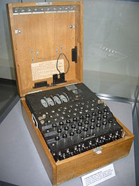
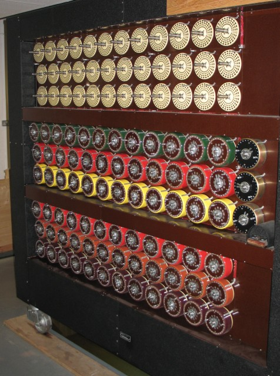
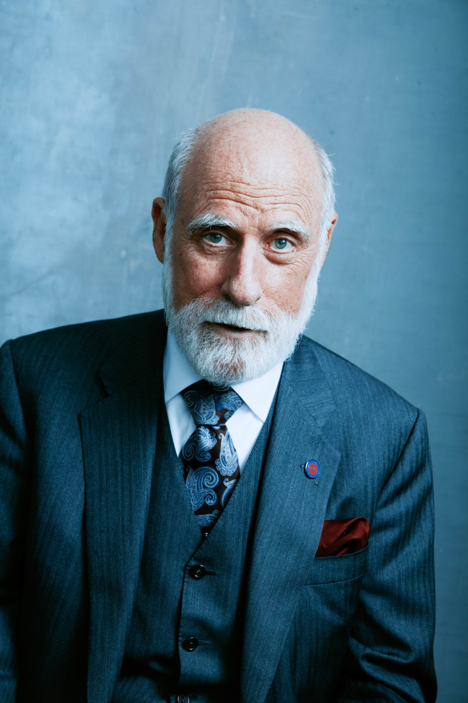
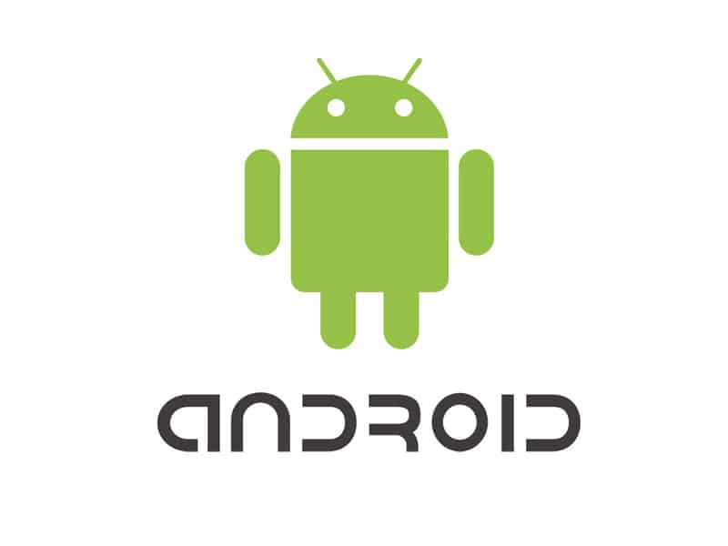
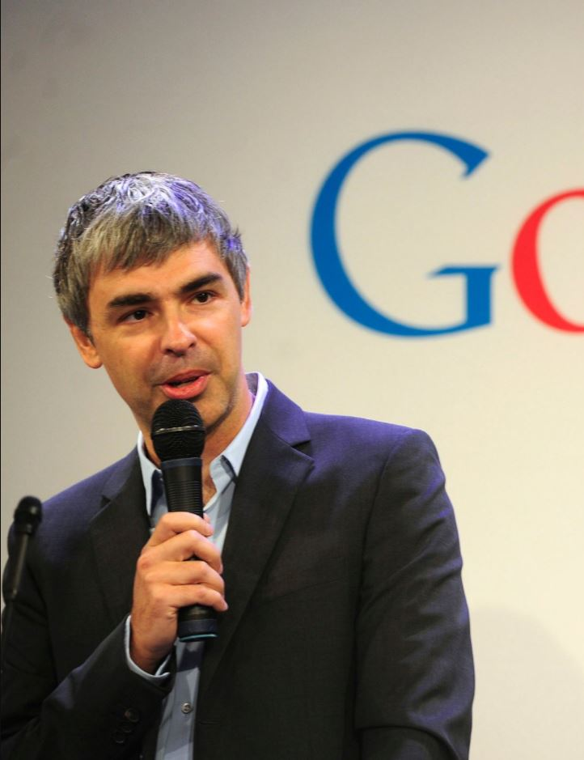

Devido a esta sociedade corrompida onde o indivíduo é exposto desde que nasce, sabe-se que são grandes os obstáculos enfrentados por pessoas de classe, gênero e raça determinados.
Sob este ponto de vista, há uma baixa procura das mulheres por cursos de TI e isso pode estar relacionado a fatores sociais e culturais.
Portanto, para destacar a importância das mulheres na área da tecnologia e incentivar futuras profissionais de TI:
Alan Turing, considerado o pai da computação.
Se pararmos para pensar, diferentemente da maioria das áreas de atuação, a informática é uma das mais novas. Por exemplo, desde a Grécia antiga, e possivelmente antes, existem filósofos que foram importantes nos estudos da filosofia, mas, por outro lado, a primeira pessoa a programar uma máquina pela primeira vez foi Ada Lovelace em 1843, o primeiro computador surgiu em 1946, a internet foi criada em 1969, ou seja, é tudo muito recente em comparação com outras áreas.
Claro que para a informática ser algo tão recente e ao mesmo tempo tão avançado, houveram pessoas que pavimentaram o caminho e ajudaram a construir e desenvolver a tecnologia como temos hoje.
Confira agora quem foram essas pessoas e o que elas fizeram; aqui você poderá ver importantes figuras masculinas na área de informática e clicando no botão acima, ou mais abaixo, no final deste artigo, há outro botão que o levará para outro artigo contendo importantes figuras femininas na área da informática.
Charles Babbage, considerado um dos “pais” da computação, foi um cientista, matemático, filósofo, engenheiro mecânico, inventor e professor da Universidade de Cambridge.

Charles Babbage (1791 - 1871)
Na época de Charles Babbage a taxa de erros humanos era muito grande; isso motivou Charles a querer mecanizar esses processos.
O resultado de tantas pesquisas foi a Máquina Diferencial de Charles Babbage idealizada em 1820. Esta máquina pretendia calcular e imprimir tabelas matemáticas, ela usava o método das diferenças que baseia todo o cálculo na adição, não importa a complexidade da função.

Máquina diferencial de Charles Babbage
A vantagem desta máquina é que cada resultado se baseia no anterior, desse modo se o milésimo resultado estivesse correto, também estariam todos os 999 antes dele.
Infelizmente a engenharia da época não permitia a construção em escala real dessa máquina, sendo assim Charles fez apenas 1 protótipo.
O maior feito de Charles Babbage foi a sua máquina analítica, que em conceito, era muito parecida com os atuais computadores.
Máquina Analítica de Charles Babbage
Essa máquina seguia instruções programadas e era capaz de realizar as quatro operações matemáticas básicas em um curto período de tempo; era manipulada por cartões perfurados e os resultados eram impressos automaticamente.
Porém, apenas uma parte da máquina foi construída em 1871, quando Charles Babbage morreu devido a insuficiência renal.
OBSERVAÇÃO: Charles Babbage contou com a ajuda de Ada Lovelace que escreveu o algoritmo a ser processado pela sua máquina analítica; Ada Lovelace é considerada a primeira programadora da história.
Alan Turing foi um matemático, cientista da computação, lógico, criptoanalista, filósofo e biólogo teórico.

Alan Turing (1912 - 1954)
Durante a Segunda Guerra Mundial os nazistas usavam a máquina eletromecânica Enigma para criptografar e descriptografar códigos de guerra.
Máquina Eletromecânica Enigma
A Enigma podia ser configurada em 26 modos de encriptação distintos, baseados na posição em que três eixos mecânicos eram conectados entre si. A letra presente no primeiro eixo determinava quais seriam as letras seguintes. Desse modo, se a primeira letra fosse A, por exemplo, quando se digitava a letra J, essa era substituída pela letra B, no entanto, caso a letra inicial fosse B, a letra J seria substituída pela letra C. A letra inicial de cada mensagem era, portanto, a chave criptográfica de cada mensagem, e, por isso, era trocada todos os dias, exatamente à meia-noite.
Turing teve um papel importante na vitória dos aliados na Segunda Guerra Mundial já que foi o responsável por quebrar o código da máquina Enigma utilizando uma máquina desenvolvida por ele e conhecida como bomba eletromecânica.
A Bomba Eletromecânica era um enorme computador eletromecânico que pesava quase uma tonelada e tinha cerca de 1,80 m de altura. Na parte frontal da máquina, havia 108 eixos, que eram agrupados em nove linhas com 12 espaços cilíndricos. Nesses cilindros eram encaixados os tambores, que, depois de programados manualmente, por meio de cartões perfurados, giravam simultaneamente, combinando as letras de cada tambor com as mensagens captadas em agrupamentos de três letras.
Os tambores iniciavam a combinação em uma determinada letra e, ao final de cada ciclo, sua posição era incrementada para a próxima letra, assim, o ciclo era iniciado novamente. Ao todo, cada ciclo passava por um total de 17.576 posições diferentes.
Bomba Eletromecânica de Turing
Alan Turing e sua equipe sabiam do modo como a posição dos eixos da Enigma mudava a encriptação das mensagens e também que essa configuração era alterada todos os dias. Em uma de suas tentativas de quebrar o código criptografado, Turing desenvolveu uma técnica pela qual a Bomba Eletromecânica buscava uma frase específica que se repetia na mesma posição, em todas as mensagens trocadas entre as forças armadas nazistas. Além disso, o cientista inglês também se beneficiou de uma grande falha da máquina alemã: ela não era capaz de criptografar uma mensagem sem alterar todas as suas letras.
Isso indicava que se a frase original contivesse a letra A, por exemplo, a letra criptografada jamais poderia ser A, independentemente de qual fosse a configuração em que a máquina estava. Baseada nisso, a Bomba Eletromecânica procurava a frase que se repetia e combinava-a às outras 26 possibilidades de configuração, captadas ao longo do tempo, até que, em alguma dessas combinações, a mesma letra não se repetisse. A frase em questão, presente no final de todas as mensagens era “Heil Hitler” (salve Hitler).
Depois da guerra Turing continuou o seu trabalho no desenvolvimento do computador e de uma inteligência artificial.
Em 1952 a polícia descobre que Alan Turing era homossexual, que era proibido na Inglaterra.
Turing foi condenado por indecência grave e obrigado a afastar-se de seu ofício e para não ser preso, aceitou a passar por um “tratamento” que era, na verdade, uma castração química.
Em 1954, Turing é encontrado morto em sua casa e a causa da morte foi envenenamento por cianeto. Sua morte foi registrada como suicídio, sendo que até hoje não se sabe se foi ou não proposital.
Em 2013, a rainha Elizabeth II concedeu o perdão real a Turing e em 2009, o primeiro-ministro britânico Gordon Brown desculpou-se publicamente pelo modo como o governo britânico tratou Turing após a guerra.
Alan Turing considerado um dos “pais” da computação estabeleceu um modelo teórico que pode ser usado para implementar aspectos lógicos e matemáticos de um computador, além de ter ajudado a salvar a vida de milhões de pessoas na Segunda Guerra Mundial.
Em 2014 foi lançado o filme O Jogo da Imitação que conta a história de Alan Turing. O filme recebeu diversos prêmios incluindo o Óscar na categoria de melhor roteiro adaptado.
Para ver o filme: Clique aqui.
Vint Cerf é um matemático e informático estadunidense conhecido como o “pai” da internet.
Vint Cerf - 1943 (78 anos)
Em 1969 existia uma rede chamada ARPAnet que estava ficando muito sobrecarregada de computadores e para resolver este problema Vint Cerf criou um programa para a transmissão de dados por essa rede, este é o famoso TCP/IP.
NOTA: O TCP/IP foi desenvolvido por Vint Cerf e Robert Kahn.
Graças ao TCP/IP que a ARPAnet pode se tornar o que é conhecido hoje como internet.
Atualmente Vint Cerf está envolvido no projeto de internet interplanetária em parceria com a NASA.
Alan Kay é formado em matemática e biologia; se parar para pensar são áreas um tanto quanto distantes da informática, mesmo assim, Alan gostava de relacionar essas suas duas grandes paixões.

Alan Kay 1940 (81 anos)
A principal contribuição de Alan Kay foi ter inventado o paradigma de programação orientada a objetos (POO).
A formação de Alan em matemática deu a ele a base lógica para programação e sua formação em biologia deu a ele praticamente todos os conceitos de programação orientada a objetos.
Segundo Alan, o computador ideal deve funcionar como um organismo vivo, isto é, cada célula se relaciona com outras a fim de alcançar um objetivo, mas cada uma funciona de forma autônoma. As células poderiam também reagrupar-se para resolver um outro problema ou desempenhar outras funções.
A programação orientada a objetos revolucionou a área da programação, pois, permitiu aos profissionais dessa área programar com naturalidade. Diversas linguagens de programação que, hoje em dia, são muito procuradas no mercado de trabalho são orientadas a objetos.
Além disso Alan Kay ajudou a criar a linguagem de programação orientada a objetos Smalltalk, concebeu o laptop, a arquitetura das modernas interfaces gráficas dos computadores (GUI) e trabalhou na conhecida empresa de tecnologia Xerox onde esteve envolvido em projetos como a criação do mouse e do padrão Ethernet.
Devido a invenção da programação orientada a objetos, Alan Kay recebeu o prêmio Turing em 2003 e atualmente segue trabalhando para criar uma máquina que recapitule ainda mais os padrões do mundo como conhecemos.
Bill Gates é um programador, magnata, empresário, diretor executivo, investidor, filantropo e autor estadunidense que junto com Paul Allen fundou a empresa de tecnologia Microsoft e ajudou a popularizar o computador na década de 1990 e nos anos 2000 através do sistema operacional mais utilizado do mundo, o Windows.

Bill Gates - 1955 (66 anos)
Em 1973 ingressou em Harvard, mas dois anos depois abandonou a universidade e junto com Paul Allen desenvolveu o sistema de interpretação da linguagem de programação BASIC e em seguida fundou a Microsoft.
Em 1985 a Microsoft lançou a primeira versão do Windows que alcançou 90% dos computadores da época. O Windows foi o principal responsável por popularizar os computadores pessoais.

Hoje Bill Gates é uma das pessoas mais ricas do mundo e dedica seu tempo em projetos filantrópicos de sua fundação criada em parceria com a sua esposa Melinda Gates em 2000, a “Bill & Melinda Gates Foundation” voltada inicialmente para o financiamento de pesquisas sobre a AIDS.
NOTA: para saber mais sobre Bill Gates recomendamos a minissérie O Código Bill Gates, disponível na Netflix; e o filme Piratas do Vale do Silício.
Tim Berners - Lee é um físico, britânico, cientista da computação e professor do Massachusetts Institute of Technology (MIT) que dentre tantas contribuições, criou a World Wide Web (WWW).

Tim Berners - Lee - 1955 (66 anos)
Tim Berners - Lee contribuiu imensamente para o avanço e popularização da internet. Ele criou o protocolo HTTP que permite a transmissão de dados multimídia, como fotos, vídeos, música, etc, pela internet. Criou também a linguagem de marcação de hipertextos (HTML) que é amplamente utilizada no mundo da programação e que foi utilizada, por exemplo, para criar praticamente todos os sites que você acessa, incluindo este (emoji de sorriso).
Além disso, foi Tim Berners - Lee que cunhou o termo World Wide Web (o famoso WWW) que é um sistema de documentos na internet que podem ser acessados na forma de hipertextos e para acessar estas informações são utilizados os navegadores de internet, como o Google Chrome, Microsoft Edge, Opera, etc.
Linus Torvalds é um engenheiro de software finlandês naturalizado estadunidense, mundialmente conhecido por ter criado o Kernel do Linux, base fundamental para a construção e diversos outros sistemas operacionais gratuitos, como o Android, atualmente, usado na maioria dos smartphones.

Linus Torvalds - 1969 (51 anos)
“Código aberto é o único jeito certo de se fazer software”. Essa é uma famosa frase de Linus Torvalds que é defensor do movimento software livre, modelo em que o produto do desenvolvimento de programadores é liberado de forma gratuita para uso, modificação e, em alguns casos, exploração pela comunidade.
Logo do Linux
Além do Linux, Linus Torvalds também é o criador do Git, um software usado no desenvolvimento de programas para controle de versão durante o processo de testes e compilações.
Outros sistemas operacionais gratuitos desenvolvidos a partir do Kernel de Linus Torvalds são: Linux Ubuntu, Debian, Fedora e produtos como o Chrome OS da Google. Além do já mencionado Android usado pela maioria das pessoas hoje em dia.
No tempo atual Torvalds é visto como uma figura de referência no mundo da tecnologia e suas palestras, TEDs e conferências são eventos aguardados por todos que têm interesse em desenvolvimento e engenharia, além da difusão do software livre.
Larry Page é um cientista da computação, empresário de internet e atual CEO da Alphabet Inc, um conglomerado de várias empresas vinculadas ao Google, até o próprio Google. Também foi CEO do Google até 2015 e em 2011 foi considerado uma das 100 pessoas mais influentes do mundo pela revista norte-americana Time.
Larry Page - 1973 (48 anos)
A maior contribuição de Larry Page foi a criação do serviço de busca mais utilizado do mundo: o Google. Essa ferramenta de busca permite que você pesquise sobre qualquer assunto ou conteúdo e em frações de segundo milhares de resultados são exibidos.
Integrando essa “família” nós temos o Youtube, Android, Chrome, Waze, Google Maps, Translate, Books, Orkut, Images, Drive, Calendar, Analytics e muitos outros.
Mark Zuckerberg é um programador e empresário norte-americano mundialmente conhecido por criar a maior rede social do mundo: o Facebook.

Mark Zuckerberg - 1984 (37 anos)
O Facebook foi criado em 2004 por Mark Zuckerberg e outros dois alunos da universidade de Harvard. Essa polêmica rede social é a maior e mais influente do mundo e o jovem Mark Zuckerberg, com 37 anos, acumula um patrimônio de U $116,8 bilhões.

Hoje, muitas outras redes sociais fazem parte do facebook que recentemente passou a se chamar Meta Platforms que reuniu oito tecnologias, são elas: Facebook, Messenger, Instagram, WhatsApp, Oculus, Workplace, Portal e Novi.

Esse nome (Meta) não é por acaso, o criador do Facebook e atual CEO da Meta Plataformas quer dar um passo à frente na jornada de conexões sociais, um passo rumo ao metaverso.
Apesar de agora o Facebook se chamar Meta, não foram eles que criaram o metaverso, mas o metaverso pode acontecer dentro das redes sociais, como o Facebook, Instagram, etc.
O Metaverso é uma tecnologia nova que está chegando agora e, por isso, é normal que muitos ainda não saibam o que é o metaverso. A palavra “meta” significa “além” e a palavra “verso” vem de "universo", ou seja, esta é uma tecnologia criada para simular um mundo além do nosso universo, na prática será um espaço coletivo e virtual compartilhado, formado pela soma de realidade virtual, realidade aumentada e internet.
Jan Koum é um empreendedor da internet e programador. É o CEO e criador do WhatsApp, um aplicativo de troca de mensagens que foi adquirido pelo Facebook em 2014.
Jan Koum - 1976 (45 anos)
Em 2010, este ucraniano mudaria para sempre a forma de comunicação entre as pessoas. Jan Koum e sua família viviam na Ucrânia e eram extremamente pobres, atrás de uma vida melhor, aos 16 anos Jan e sua família mudaram-se para os Estados Unidos e foram inseridos em um programa social que lhes concedia uma quantidade em dinheiro por semana para comprar comida.
Através deste mesmo programa social Jan Koum consegue entrar na Universidade Estadual de San Jose. Dentre vários cursos que ele pretendia entrar, o que ele menos queria era computação, mas foi para esse curso que ele conseguiu passar.
Jan começou a fazer estágio na Yahoo e, junto com um amigo, eles tiveram a ideia de criar um app de troca de mensagens que, diferente do SMS, não cobrasse para isso. Eis que surge o WhatsApp.

O WhatsApp mudou a forma das pessoas se comunicarem, hoje, é possível, gratuitamente, se comunicar por vídeo com alguém do outro lado do mundo em tempo real. Esse app tão necessário nas vidas das pessoas foi vendido para o Facebook em 2014; e o ucraniano que imigrou para os Estados Unidos em busca de melhores condições de vida, faturou U $19 bilhões.
Evidentemente houveram outros, muitos outros, que foram muito importantes para a evolução da informática e ainda há muitos cientistas da computação que vem ajudando a tecnologia avançar ainda mais, como os vários cientistas da computação de grandes empresas como a Google que tentam tornar a realidade do computador quântico possível, mas seria impossível adicionar todos aqui, mesmo assim, tenho certeza de que deu para conhecer bem algumas das pessoas que ajudaram a tecnologia ser o que ela é hoje.
Claro que houveram muitas mulheres que contribuíram grandemente também, para conferir quem são elas: clique na seta abaixo 😁.
Henrique Cardoso